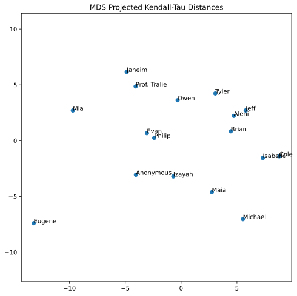

Assignment 4: Fair Elections of Animals (40 Points)
Chris Tralie
Overview / Logistics
The purpose of this assignment is to give you practice with recursion and ideas from permutation theory/sorting in a fun application to which the whole class has contributed: fair elections of animals. Each member of the class ranked a subset of animals that students volunteered on discord at the beginning of the course. In this assignment, we will define mathematically an optimal "average ranking" that incorporates everyone's choices in a fair and even way, and we will explore computational issues that arise when we attempt to create algorithms to compute this average ranking.
Though this is a pretty whimsical application of election theory, hopefully it will get you thinking about some of the computational issues involved with ranked choice voting as people begin to reckon with the myriad issues we have with fairness in our current democractic system. Click here to read a recent Time article on this topic.
Click here to review notes on Kendall-Tau and Kemeny Optimal rankings.
Learning Objectives
- Implement an exact and an approximate version of the same algorithm.
- Use recursion to implement both efficient and brute source solutions to problems.
- Manage permutations, orders, and sorts in arrays.
- Be introduced to the the notion of an algorithm reduction.
What To Submit
Submit your file ranking.py to canvas
Programming Tasks
Click here to download the starter code for this assignment. You will be editing ranking.py. Code has been provided for loading in the rankings and plotting a dimension reduced version of all pairwise ranking comparisons.
Rankings As Numbers
To keep things simple, if we have N items we're ranking, we'll label them from 0 to N-1 in some arbitrary order. In this assignment, we'll be using the animal votes that students cast, and we'll use the following labels (in alphabetical order of animal name):
0: Dog 1: Guinea pig 2: Hedgehog 3: Kangaroo 4: Owl 5: Penguin 6: Shark 7: Tiger
So, for instance, if someone gives the rankings
- Owl
- Hedgehog
- Guinea pig
- Kangaroo
- Penguin
- Tiger
- Shark
- Dog
then this would correspond to the list 4, 2, 1, 3, 5, 7, 6, 0. I have intentionally kept the list small so we can explore all permutations of this list in some later tasks.
In the starter code, you will see a method called load_permutations which loads the class rankings from a text file that's been provided in the starter code. There is a list of 8 animal strings in alphabetical order. Then, the rankings of each student are represented as arrays of numbers between 0 and 7 which index this array. All of the rankings are stored in a dictionary, where the key is the student's name as a string, and the value is such a list. The data is shown below
Computing The Kendall-Tau Distance (12 Points)
Fill in the method kendall_tau to compute the Kendall-Tau distance between two rankings. For N rankings, your method should run in O(N log N) time and use O(N) space. Review the technique here for how to do this using merge sort
To test this on the example in the background, you can write the code
If this works, you should see an output of 7, as explained in the background. For a more comprehensive example, you can run the method plot_mds_distances, which will use a method known as multidimensional scaling (MDS) to come up with a set of 2D coordinates that best preserve the Kendall-Tau distances between every pair of raters (though it will usually introduce some distortion, for a similar reason to the fact that it's impossible to create a square map of the earth without stretching some areas). If you run the code below
You should see the following plot

You can study this plot to choose your next partner with whom to visit the Philadelphia zoo, or with whom to co-parent your next pet!
Diameter (6 Points)
As hinted by the MDS example above, the The Kendall-Tau distance is truly a distance, in the sense that it is a metric space. Even though we can't perfectly visualize it spatially without error, we can still reason geometrically about it with numerics. For instance, we can search for the two rankings which are closest to each other in this space. In this case, those would be
who are at a distance of 3 from each other; they agree except for the the pairs(3, 5), (4, 6), (2, 4). We will also find this is true for Jose A and Jeremy M, who agree except for (2, 0), (2, 5), (1, 4)
Actually, we see here some of the distortion that's introduced in the MDS plot above, because, for instance, Kevin and Will appear to be further apart than Matt P and Josh B, but the latter two are actually 8 apart.
Aside from closest rankings, we can also define the opposite notion of the two ratings that are furthest apart from each other, which we refer to as the "diameter."
Your Task
Write a method that takes in the rankings dictionary, and which prints out the two people who achieve the diameter, along with their rankings and the Kendall-Tau distance between them. For M rankings and N items, your method should run in O(M2 N log(N)) time.If this worked properly, you should see that Kevin H and Nikolai L are the most different, with 26 pairwise disagreements (in fact, they are nearly exact reverses of each other except for two pairs!).
Hint: You might take inspiration by studying the code in plot_mds_distances, which does some similar preprocessing to the code you will have to write.
Average Rank Aggregation (7 Points)
We discussed the Kemeny optimal rank aggregation, but there is a simpler technique we can try first to incorporate everyone's votes. We can think of every ranking as giving rise to a place number associated to each index. For example, if a number shows up at index 6 in the a permutation, we give it a place of 7 (since we're zero-indexed). We then simply average these place numbers to get a final average place. For example, in our rankings, we get the following averages:
which leads to these results in the election if we sort in ascending order of average place number
Expressed as a list, this corresponds to the permutation [0 5 2 7 6 3 4 1]
Your Task
Create a method get_average_rankings that accepts the parameters animals and raters and which prints out the animals in the order of their average aggregated rankings. For N choices and M rankings, your method should run in O(MN) time. If you've computed averages at each index, you can simply use the np.argsort method to figure out their order, rather than using your own sorting method.
Brute Force Kemeny Optimal Ranking (15 Points)
The above answer seemed to match peoples' preferences, but what about the Kemeny Optimal rank? (click here to review notes on this). Unfortunately, there is no known way to compute this efficiently. But we can create a brute force scheme to recursively examine every permutation and find the one which minimizes the sum of the Kendall-Tau distances to all rankings. In this case, this is doable, because we only have 8 alternatives, and 8! = 40320, so we can just crunch through this number of possibilities (though many more animals than this would be intractable).
Your Task
Create a recursive method which computes the Kemeny Optimal ranking by trying all possible permutations. You can use the permutation enumeration code from the sorting module as a starting point. You will probably want to pass a python list or dictionary by reference recursively that stores the minimum cost seen so far, as well as a copy of the permutation that achieved that cost (you can use list.copy() to copy it over).
If this works correctly, you should get the following permutation as the one that minimizes the sum of Kendall-Tau distances:
[1, 4, 0, 6, 7, 5, 2, 3]
Let's look at what characters these are and compare them side by side with the average ranking
| Average Raking | Kemeny Optimal |
Interestingly, the trends are the same, but moving the hedgehog down two places leads to more agreements overall.